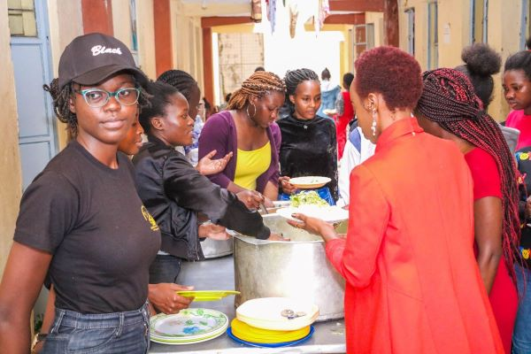
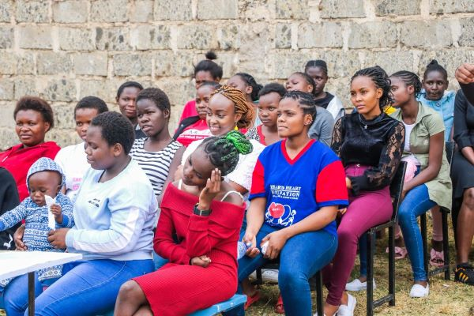
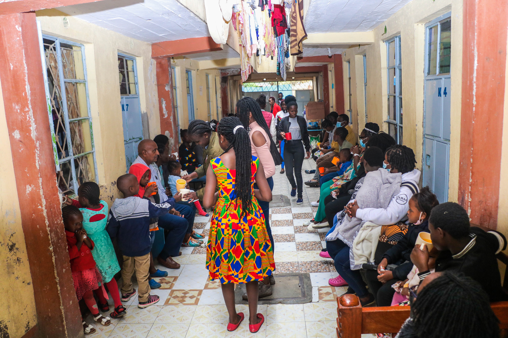
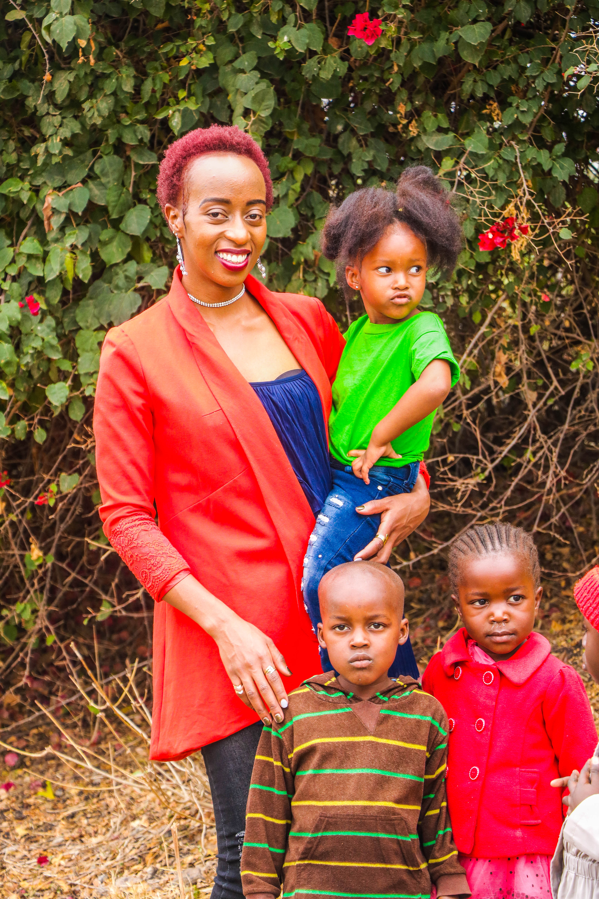
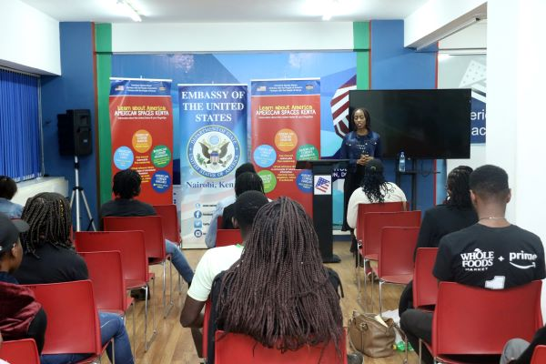

Healing Hearts
This isn't a wellness brand. It's an honest space — for advocacy, for community, and the kind of conversations that actually help.
Healing Hearts is a mental health advocacy organization, founded in Nairobi. It exists to reduce stigma, create safe spaces for honest conversation, and support people navigating their mental health journeys — especially in communities where these conversations have historically been silenced.
"There's a version of me that would have told you everything was okay. Smiled at the right moments. Said 'I'm good' on autopilot. She existed for a long time. This page — this whole world — is what happened after I decided to stop being her."
[Our full advocacy story will go here — the honest, personal account of our mental health journey, what led us to create Healing Hearts, and why this work matters to us. In our own words.]
Read the Full Story →




These are not sponsored recommendations. They are resources Molly trusts and has personally vetted — for people in Kenya and beyond who need somewhere to turn.